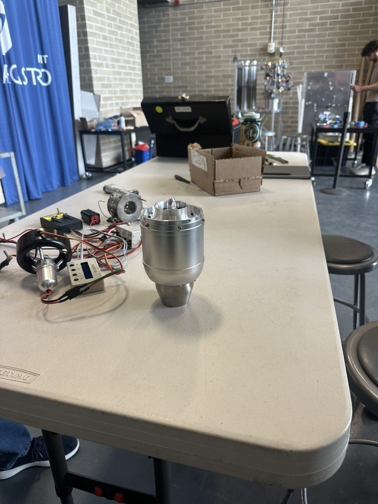
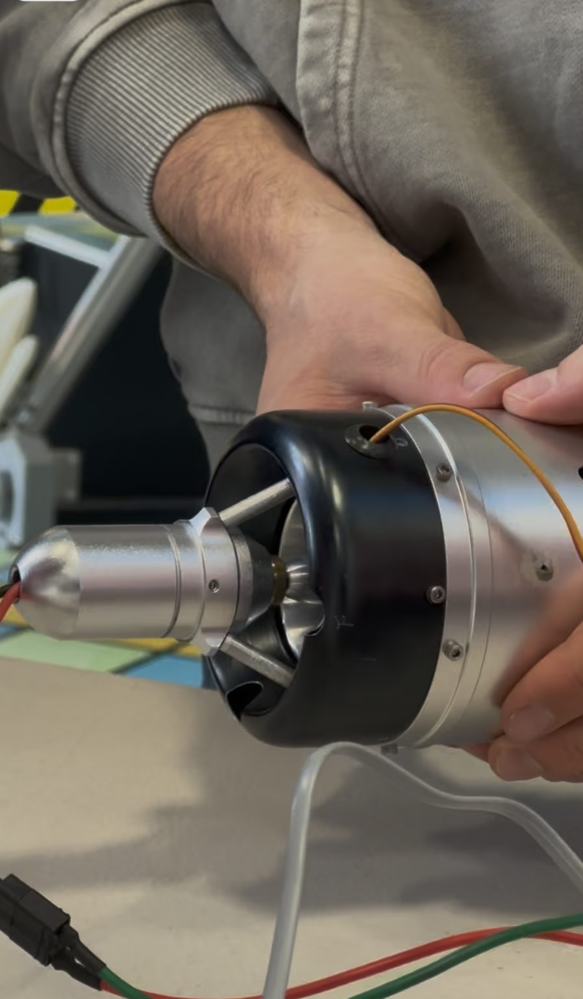
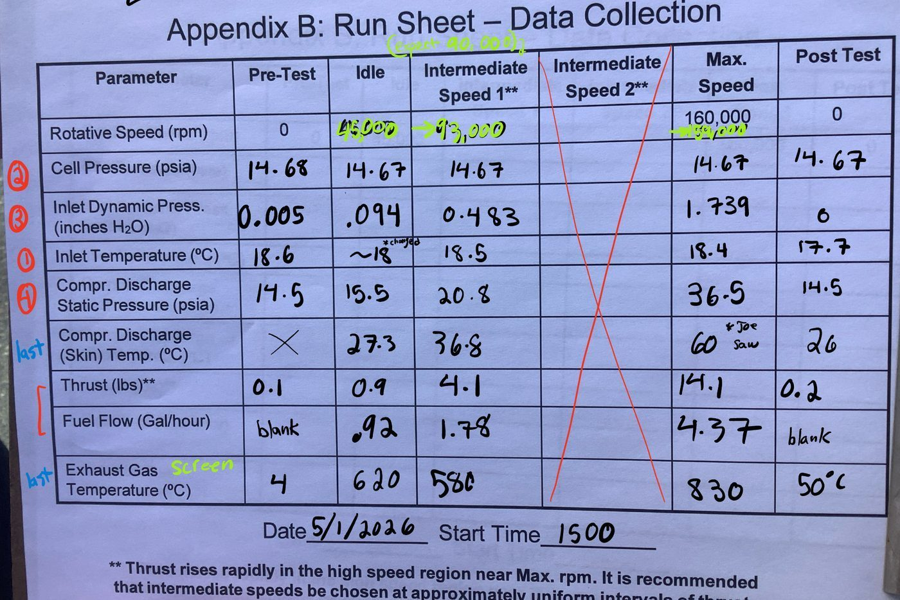
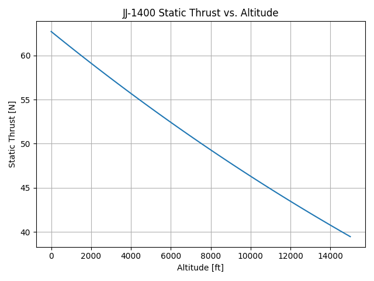

JetJoe Turbojet: Model vs. Test
Built a Brayton-cycle thermodynamic model for a JJ-1400 turbojet engine with "The Millennium Falcons" (Team #5), then assembled, dry-ran, and live-fired the real engine on an instrumented test stand to see how the model held up against measured thrust, mass flow, and turbine temperatures — then used the results to estimate range and efficiency for a notional aircraft.
The Problem
The goal was to predict a small turbojet's real performance — thrust, mass flow, fuel consumption, turbine temperatures — from first principles before ever firing it, then see how well an idealized Brayton-cycle model held up against actual measured data across a full range of throttle settings, including where it breaks down against real losses (finite compressor/turbine efficiency, heat transfer, non-ideal expansion).
Approach
In Part A, we derived the full Brayton-cycle turbojet model: a momentum-based thrust equation from a control-volume derivation, the mass flow relation through the choked inlet, a shaft-work balance between the turbine and compressor to back out turbine inlet temperature, and nondimensional forms of specific thrust and specific fuel consumption — all built from the engine's measured geometry (compressor/turbine blade angles, radii, flow areas). In Part B, we physically disassembled and reassembled the engine, measured the real geometric parameters directly off the hardware (nozzle guide vane exit angle, turbine rotor exit blade angle, turbine throat area), and ran a "dry-run" spin-up/coast-down test with no combustion to check shaft alignment and bearing health by timing how long the rotor coasted after the starter disengaged. In Part D, we ran the engine for real on an instrumented test stand across five operating points — pre-test, idle, an intermediate speed, max speed (~160,000 rpm), and post-test — recording thrust, fuel flow, pressures, and temperatures, then processed the data two ways: a "direct assessment" straight from measured pressures and thrust, and a "thermodynamic assessment" that back-calculated compressor efficiency, turbine inlet temperature, and jet velocity from the cycle model, and compared both against our original Part A prediction.
What I Built
I derived the thrust equation for the whole engine from a first-principles momentum and control-volume analysis, and worked through the specific-thrust and specific-fuel-consumption derivations, including their nondimensional forms. I also worked through the turbine-inlet- temperature relation from a shaft-work balance between the compressor and turbine. During the physical build, I helped assemble and disassemble the engine, took the direct geometric measurements (nozzle guide vane exit angle, turbine blade exit angle, turbine throat area) used to define the model, and helped run the coast-down test that verified shaft alignment before live-fire testing.




Results
The model landed close on some figures and further off on others once checked against real data — our modeled specific thrust (0.741) undershot the measured "direct" value (0.914) and was well below the "thermodynamic" estimate (2.06) at max speed, and our predicted turbine inlet temperature (716 K) came in well under the thermodynamic estimate (1137 K). Most of the gap comes from losses the idealized cycle model leaves out; our initial 70% compressor efficiency assumption was optimistic. Live-fire testing reached about 160,000 rpm with a clean coast-down (no rubbing or alignment issues), confirming the assembly was sound. Using the measured specific fuel consumption at intermediate speed, we estimated a Breguet range of roughly 121 km and an overall propulsive efficiency of about 0.34% for a notional small aircraft using this engine — low, as expected for a small turbojet that trades efficiency for a high-velocity, low-mass-flow exhaust jet.